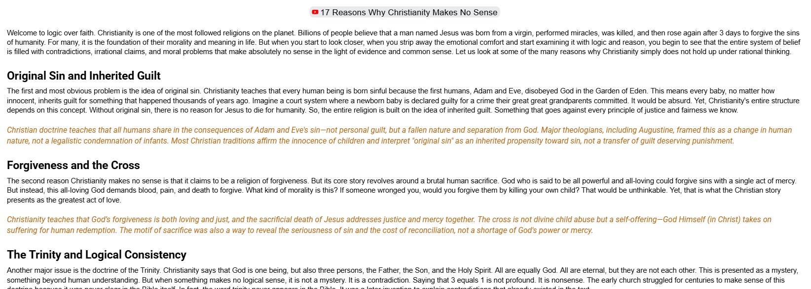

Shalom, and a blessed Sabbath to you all. Do you know the deep connection between the Sabbath and shalom? The Sabbath was specifically intended by God to provide deep restoration, peace, and well-being — what the Hebrews called shalom.
I'm a little nervous this post might ruin some of that shalom. I just watched and read the transcript of “17 Reasons Why Christianity Makes No Sense”, a 19-minute video. I'm a sucker for this kind of content — being an engineer, I've always carried a chip on my shoulder about being “the dumb engineer who believes the myths and fairy tales of the Bible,” and I've been mocked for it more than once. Watching this brought a lot of that back. Most of the comments on the video were some version of “great post, Christians are idiots,” and I wanted to bring a response with a little more fairness and balance — both to what I believe and to what the majority of the world actually believes.
I normally never go to AI first on something like this, but I did this time, using it to help me test my responses against each of the 17 claims. A handful of the arguments actually gave me something to think through, but most collapsed the moment you look past the rhetorical framing. Three examples:
Original sin. The video's objection is that a newborn can't fairly “inherit guilt” for something Adam and Eve did thousands of years ago — like punishing a baby for a crime their great-great-grandparents committed. But that's not actually the doctrine. Christian teaching — going back to Augustine — is that humanity inherits a fallen nature, not personal legal guilt. Most Christian traditions explicitly affirm the innocence of children; “original sin” describes an inherited propensity toward sin, not a criminal record transferred at birth.
The cross as “divine child abuse.” The claim is that an all-powerful, all-loving God should be able to forgive with a single act of mercy instead of demanding blood and death. But the cross isn't God punishing someone else to satisfy His own anger — it's God, in Christ, absorbing the cost of sin Himself. It addresses both justice and mercy at once, and the seriousness of the sacrifice is there to reveal how seriously God takes sin and reconciliation, not evidence that He lacks the power to simply wave it away.
The Trinity as a logical contradiction. “Three equals one” sounds like nonsense stated that way, but that's not the claim — one God, three persons, is a claim about relationship and nature, not arithmetic. It's a genuine mystery in the sense that it exceeds full human comprehension, the same way most cutting-edge physics does, but that's a different thing entirely from a contradiction.
I went through all 17 the same way — original sin, the cross, free will versus sovereignty, alleged Bible contradictions, Old Testament morality, salvation and morality, parallels to pagan myths, miracles, the resurrection evidence, church history's moral failures, divine hiddenness, faith versus evidence, science and religious diversity among them. If any of you want to add your own responses, send them my way and I'll fold them in.

Blessed Lord's Day, brothers — a wonderful memorial for Jesus' resurrection and an opportunity for corporate worship and fellowship. Before I close this out, here's the broad shape of Scripture I keep coming back to whenever an argument like this tries to isolate one piece of the Bible from the whole story it belongs to:
The Story of Scripture. In the beginning, God created — and Genesis is theological literature, not a science text. Monotheism stands out sharply because Moses wrote to a polytheistic world. Creation is called good, and man and woman are made in God's image as caretakers of it — the garden itself represents shalom, the peace and wholeness humanity has longed to recover ever since. Genesis 3 breaks that peace through rebellion; Genesis 4 shows sin spiraling into violence; the genealogies of Genesis 5 hammer home mortality, with Enoch's story breaking the pattern as a signal that death isn't the whole story. The flood shows sin saturating humanity and grace surviving through Noah anyway. Babel shows humanity's unified pride, scattered by God. Then Genesis 12 turns the whole narrative toward hope: God calls Abram to bless all nations, not just one family.
From there the story runs through Moses and the Exodus, the Law given at Sinai, the failures and partial successes of the monarchy under Saul and David, the divided kingdom's slow decline, and the prophets calling the nation back while pointing ahead to a coming Messiah. Exile and return keep the promise of restoration alive even through judgment. And then the New Testament identifies Jesus as the fulfillment of all of it — Messiah, the one the Old Testament had been pointing toward the whole time — with the church in Acts and the epistles carrying that story forward, and Revelation promising it ends the way it began: garden to garden, God's plan completed.
None of that erases hard questions. But it's a very different picture than “17 disconnected absurdities” — it's one coherent story, and every one of those 17 objections is really just a challenge to one chapter of it, not the whole book.
Comments